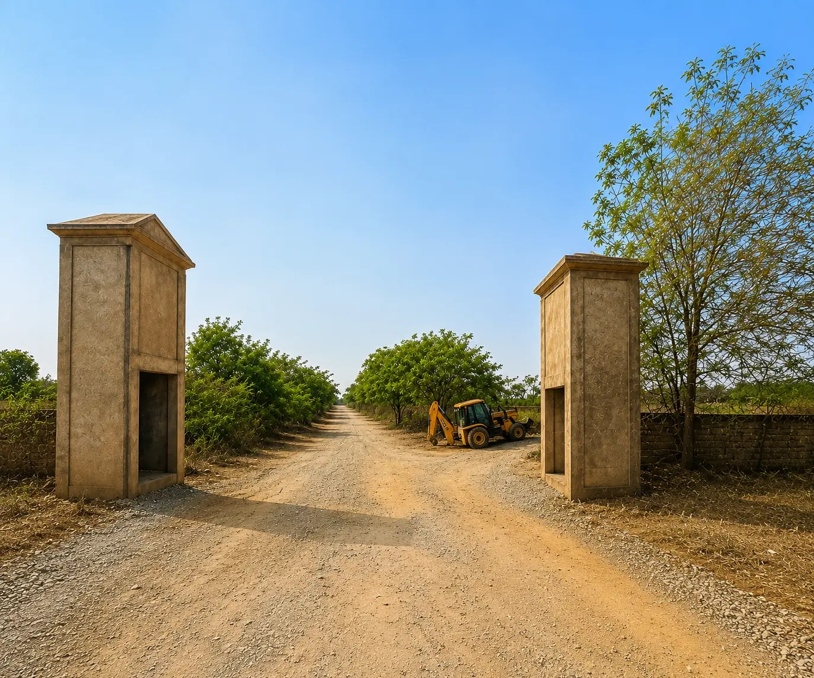

East Gate Nagaram
Premium Gated Community Open Plots situated in the high-growth corridor of Maheshwaram, Hyderabad.

Project Overview
East Gate Nagaram brings an exceptional investment and residential opportunity close to major IT hubs, hardware parks, and the Rajiv Gandhi International Airport. Designed cleanly with 100% Vaastu compliance, this layout offers robust infrastructure for immediate construction or long-term value appreciation.
- Location: Nagaram / Maheshwaram Mandal, Ranga Reddy District
- Approval Status: Authority Compliant Layout
- Facing Options: Premium East & West Facing Plots Available
- Plot Sizes: Customized dimensions tailored for independent villas and houses
Project Highlights & Amenities
Road Connectivity
Spacious blacktop internal roads complemented by avenue plantation.
Strategic Location
Seamless connectivity to the Outer Ring Road (ORR) and Srisailam Highway corridors.
Utilities & Security
Underground drainage layout, electricity lines, and 24/7 gated security frameworks.
Book Your Site Visit for East Gate Nagaram
Speak with our expert advisors to learn more about pricing, spot offers, and layout availability.
Enquire Now